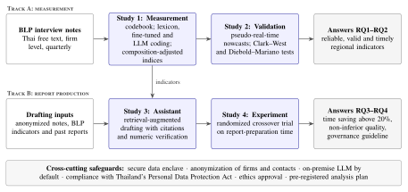
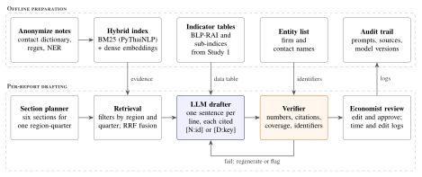
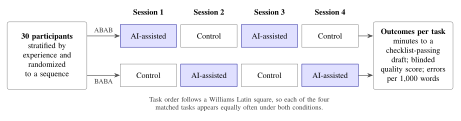
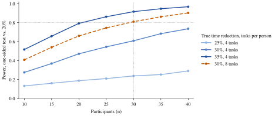
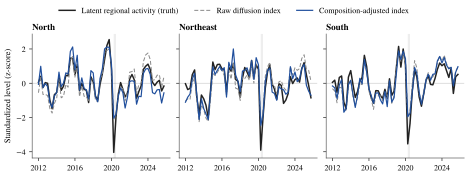
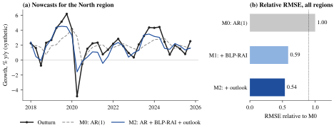
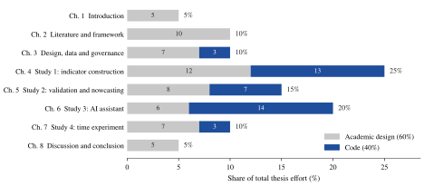
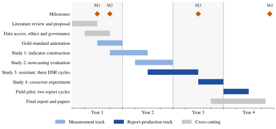

1 Introduction
Monetary policy and regional development policy depend on timely information about economic conditions outside the capital. In Thailand, the official measure of regional output—the gross regional and provincial product compiled by the Office of the National Economic and Social Development Council (NESDC)—is annual and released with a substantial lag, so it cannot reveal turning points within the year. Higher-frequency regional indicators cover selected activities such as consumption, investment, manufacturing, tourism and farm income, and are themselves published weeks after the reference period.
Central banks complement official statistics with systematic conversations with firms. Prominent examples are the Federal Reserve’s Beige Book, the Bank of England’s Agents, the Reserve Bank of Australia’s business liaison program and the Bank of Canada’s Business Outlook Survey. The Bank of Thailand (BOT) runs a Business Liaison Program (BLP) through its regional offices. Liaison information is timely, captures forward-looking intentions and explains why conditions change. Its weakness is its form: it arrives as free text written by many interviewers, the set of firms changes from one round to the next, and turning it into a report requires economists to read, summarize and cross-check a large volume of notes by hand.
Two developments make it possible to address both weaknesses. Text-as-data methods, and more recently large language models (LLMs), can score narrative text at scale (Gentzkow et al. 2019; Hansen and Kazinnik 2023). Generative AI can draft text, and randomized studies report substantial time savings in writing and other knowledge work (Noy and Zhang 2023; Dell’Acqua et al. 2023; Brynjolfsson et al. 2025). Central bank reports, however, impose requirements that generic tools do not meet: every statement must be traceable to evidence, every number must be correct, and confidential information about individual firms must never appear in a draft.
The research program is organized around four gaps.
Quantitative work on liaison text has concentrated on English-language programs; Thai lacks validated economic lexicons and coding benchmarks.
Liaison samples are purposive and rotate. A change in the mix of firms can move a raw diffusion index even when no individual firm’s conditions change.
Experimental evidence on generative AI comes from consulting, customer support, software development and generic writing tasks. We are not aware of randomized evidence for analytical report production inside a central bank.
Designs that guarantee sentence-level provenance and numerically correct output for official reports are rarely specified and evaluated.
The program answers four research questions.
Can BLP interview notes be converted into regional indicators that are reliable, in the sense of agreeing with expert coders, and valid, in the sense of tracking official measures of activity?
Do BLP indicators make regional nowcasts more accurate and more timely than benchmarks that use official data only?
Does a grounded generative-AI assistant reduce report-preparation time by more than 20% without lowering report quality or increasing errors?
Which safeguards are needed for the responsible use of generative AI in central bank reporting?
The program makes four contributions. First, it provides a measurement framework for Thai liaison text: a codebook, a head-to-head comparison of lexicon, fine-tuned encoder and LLM coding, and an index that removes the effect of changing panel composition. Second, it supplies evidence on the information content of liaison data for regional nowcasting in an emerging economy where official regional data are sparse. Third, it contributes a design artifact—a drafting assistant whose output is traceable sentence by sentence and is blocked when a number cannot be verified—together with its evaluation. Fourth, it delivers pre-registered randomized evidence on the time and quality effects of generative AI in central bank analytical work. An open-source implementation accompanies the proposal.
Table 1 states the hypotheses with their quantitative targets. Section 2 reviews the literature, Section 3 sets out the design and data, and Sections 4, 5, 6 and 7 describe the four studies. Section 8 validates the software on synthetic data, Section 9 discusses implications and limitations, and Section 10 presents the work plan.
Table 1. Hypotheses and pre-specified targets.
| Hypothesis | Measure | Target | |
|---|---|---|---|
| H1 | LLM coding agrees with expert coders | Cohen’s and macro-F1 against the adjudicated gold standard | and F1 |
| H2 | The BLP index co-moves with activity | Correlation with an official activity composite | |
| H3 | BLP indicators improve nowcasts | Out-of-sample RMSE relative to an AR benchmark | Ratio ; Clark–West |
| H4 | BLP indicators are timelier | Days available before the official release | days |
| H5 | The assistant saves time | from a log-time mixed model | , one-sided test |
| H6 | Report quality is not worse | Blinded 10-point quality rubric | Non-inferiority margin 0.5 points |
| H7 | Errors do not increase | Factual and numeric errors per 1,000 words | Rate ratio ; no numeric error after verification |
2 Related literature
2.1 Central bank liaison and soft information
A long literature asks whether the narrative information that central banks collect from firms contains signal beyond official data. For the Federal Reserve’s Beige Book, Balke and Petersen (2002) show that quantified district descriptions track current activity, Armesto et al. (2009) use mixed-frequency regressions to measure its information content, and Sadique et al. (2013) relate Beige Book sentiment to economic activity. For the Bank of Canada’s Business Outlook Survey, Pichette and Rennison (2011) summarize responses with principal components. Two features of this literature matter here: quantification has relied on human or dictionary scoring of English text, and the composition of the liaison panel has received limited attention. To our knowledge, BLP information in Thailand has been used qualitatively in regional and monetary policy communication but has not been systematically quantified and validated in published work.
2.2 Text as data and LLM-based measurement
Economists build indicators from text with dictionaries (Loughran and McDonald 2011), keyword counts (Baker et al. 2016), sentiment models (Shapiro et al. 2022) and topic models (Thorsrud 2020), and use text in machine-learning forecasts (Kalamara et al. 2022); Gentzkow et al. (2019) survey the field. LLMs extend these tools to classification without task-specific training (Hansen and Kazinnik 2023). For Thai, the building blocks are word segmentation (Phatthiyaphaibun et al. 2023), pretrained encoders (Lowphansirikul et al. 2021) and Thai-capable LLMs (Pipatanakul et al. 2023). Measurement quality is judged with agreement statistics (Cohen 1960; Landis and Koch 1977; Krippendorff 2018).
2.3 Nowcasting with soft data
Nowcasting combines data released at different frequencies and dates (Giannone et al. 2008; Bańbura et al. 2013), using bridge equations, mixed-data sampling (Ghysels et al. 2007) and factor models (Stock and Watson 2002). Forecast comparisons rely on the Diebold and Mariano (1995) test with the small-sample correction of Harvey et al. (1997), the Clark and West (2007) test for nested models and the model confidence set (Hansen et al. 2011). Low-frequency regional output can be distributed to a higher frequency with related series (Chow and Lin 1971), and satellite data offer an independent proxy for activity (Henderson et al. 2012).
2.4 Generative AI and the productivity of knowledge work
Randomized evidence points to large but uneven effects. In professional writing tasks, Noy and Zhang (2023) report that access to a chatbot cut completion time by about 40% and raised quality. In customer support, Brynjolfsson et al. (2025) find an increase of about 14% in issues resolved per hour, concentrated among less experienced workers. Consultants studied by Dell’Acqua et al. (2023) worked about 25% faster on tasks inside the “jagged frontier” of model capability but made more errors on a task outside it, and developers using a coding assistant completed a programming task about 56% faster (Peng et al. 2023). Against these estimates a 20% threshold is conservative, but central bank reporting contains verification work that generative AI may not shorten, and errors are costly. The experiment in Section 7 therefore measures time, quality and errors jointly.
2.5 Retrieval augmentation, hallucination and governance
Retrieval-augmented generation conditions a language model on retrieved documents (Lewis et al. 2020); classical BM25 ranking (Robertson and Zaragoza 2009) and reciprocal rank fusion (Cormack et al. 2009) remain strong components. Retrieval reduces but does not eliminate unsupported statements (Ji et al. 2023), which motivates automated faithfulness evaluation (Es et al. 2024) and the explicit verification layer proposed here. Governance frameworks emphasize risk mapping, measurement and human oversight (National Institute of Standards and Technology 2023), and the BIS discusses the opportunities and risks of AI for central banks (Bank for International Settlements 2024).
2.6 Theoretical lenses
Four lenses organize the program. Soft versus hard information (Stein 2002; Petersen 2004): liaison information is soft—contextual, hard to verify and costly to transmit—and quantification hardens it at the cost of nuance; Study 1 measures what survives hardening, and the assistant keeps a link to the original text. The task-based framework (Acemoglu and Autor 2011): report production is a bundle of tasks (reading, summarizing, retrieving data, drafting, checking and revising), and generative AI substitutes for some and complements others, which predicts heterogeneous gains across tasks and workers. Design science research (Hevner et al. 2004; Peffers et al. 2007) frames the assistant as an artifact that must be built and rigorously evaluated. Technology acceptance (Davis 1989) links perceived usefulness and ease of use to adoption, measured in Study 4.
3 Research design and data
3.1 Overall design
The program follows a pragmatist mixed-methods design with two tracks (Figure 1). The measurement track turns notes into indicators (Study 1) and tests their predictive validity (Study 2). The report-production track builds an assistant that drafts from the notes and the new indicators (Study 3) and estimates its causal effect on preparation time (Study 4). Safeguards for data governance cut across both tracks.

3.2 Data
Table 2 lists the data sources. The BLP notes are the core input and are confidential; all processing of firm-level text takes place inside the BOT’s secure environment.
Table 2. Data sources.
| Source | Frequency | Used in | Role and caveats |
|---|---|---|---|
| BLP interview notes (Thai text) | Each round | Studies 1, 3 | Core input; confidential, processed in the data enclave only |
| Structured BLP ratings, if recorded | Each round | Study 1 | Benchmark for text-based scores |
| BOT regional economic indicators | Monthly | Study 2 | Nowcasting targets and benchmarks |
| NESDC gross regional product | Annual | Study 2 | Long-run target; few observations, pooled across regions |
| NSO Labour Force Survey | Quarterly | Study 2 | Validity check for the employment index |
| VIIRS night-time lights | Monthly | Study 2 | Independent alternative measure of activity |
| Past regional economic reports | Monthly, quarterly | Study 3 | Style reference and key points for evaluation |
| Time and edit logs | Per session | Study 4 | Primary and secondary outcomes |
3.3 Gold-standard annotation
A stratified sample of at least 1,200 note segments, drawn by region, sector and year, is coded independently by two economists using the codebook in Table 3; a third economist adjudicates disagreements. The codebook is revised until human–human agreement reaches . The adjudicated sample is split 60/20/20 into training, development and test sets for the supervised model; all reported comparisons use the test set.
3.4 Data governance and ethics
Firm names, contact names, telephone numbers and e-mail addresses are masked before any modeling, first by exact matching against the BLP contact database and then by pattern rules and named-entity recognition; masking recall is audited on a human-checked sample. LLMs run on premises by default. An external API may be used only with masked data, under an approved data-processing agreement. All processing complies with Thailand’s Personal Data Protection Act B.E. 2562 (2019) and the BOT’s confidentiality rules. Study 4 requires ethics approval and informed consent, individual results are never used for performance assessment, and the hypotheses and analysis code are pre-registered before data collection (Nosek et al. 2018).
3.5 Reproducibility
The code, configuration files and a synthetic data generator are released with the proposal; random seeds, model weights and prompt versions are fixed and logged. Results on confidential data can therefore be reproduced inside the enclave, and every software component can be inspected outside it.
4 Study 1: Measuring business conditions from liaison notes
4.1 Codebook
Each note is coded on the six topics in Table 3. A topic receives a direction relative to the previous quarter—up (), unchanged () or down ()—or is marked as not mentioned. Statements about competitors, the government or world markets are not attributed to the interviewed firm, and a topic that contains both increases and decreases is coded as unchanged.
Table 3. Codebook. Each topic is coded as up, unchanged, down or not mentioned, relative to the previous quarter.
| Topic | Definition | Index role |
|---|---|---|
| Sales and demand | Sales, orders, revenue, customer and tourist numbers, occupancy | Activity (BLP-RAI) |
| Employment | Headcount, hiring, working hours | Activity (BLP-RAI) |
| Investment | Capital spending, machinery, capacity and branch expansion by the firm | Activity (BLP-RAI) |
| Selling prices | Prices charged by the firm | Price pressure |
| Costs | Input costs: raw materials, wages, energy | Cost pressure |
| Outlook | Expected business conditions over the coming quarter | Leading indicator |
4.2 Scoring methods
Four scorers are compared on the gold-standard test set.
Lexicon. A Thai economic lexicon assigns each clause to a topic by keyword priority and to a direction by counting increase and decrease terms, with negation handling (“not yet raised” is unchanged). It is transparent and serves as the baseline.
Fine-tuned encoder. A Thai pretrained encoder (Lowphansirikul et al. 2021) with one four-class head per topic, trained on the gold standard.
LLM structured extraction. An instruction-tuned LLM returns one label per topic under a JSON schema, with the codebook and worked examples in the prompt (Appendix A). On-premise and API models are compared.
Ensemble. A majority vote over M1–M3.
The comparison reports accuracy, macro-F1, Cohen’s and Krippendorff’s by topic, together with cost and processing time per 1,000 notes.
4.3 Index construction
Let denote the score of firm on topic in quarter , where firm belongs to region and sector . The diffusion index, or net balance, is where and are the shares of firms reporting an increase and a decrease. Because the liaison sample is purposive, sectoral shares in the sample differ from the structure of the regional economy. The sector-weighted index re-weights sector-level net balances by the sector’s share in regional output, renormalized over the sectors observed in quarter :
4.4 Composition adjustment
Firms differ persistently in how optimistic they sound, and the set of firms interviewed changes over time. If firms that enter the panel are systematically more optimistic, a raw index drifts upward even when no firm’s conditions improve. The composition-adjusted index separates persistent firm effects from common quarterly movements with a weighted two-way fixed-effects model, estimated by weighted least squares with weights , so that each sector contributes in proportion to its output share. The quarter effects are identified from changes within firms that are interviewed more than once and are computed by alternating projections, which converge for connected panels. They are normalized to the mean of the weighted raw index, so the adjusted index retains the net-balance scale. The composite BLP Regional Activity Index (BLP-RAI) averages the adjusted sales, employment and investment indices. The cross-sectional standard deviation of firm scores provides an uncertainty index, and the series are seasonally adjusted with X-13ARIMA-SEATS where seasonality is detected.
Fixed effects remove time-invariant differences between firms but not selection on current conditions—for example, distressed firms declining an interview. Participation is therefore modeled as a function of past scores, and the indices are re-estimated with inverse-probability weights as a sensitivity check.
4.5 Validity framework
Table 4 lists the validity tests and pass criteria. Predictive validity is the subject of Study 2.
Table 4. Validity framework for the BLP indices.
| Property | Test | Criterion |
|---|---|---|
| Reliability | and between each scorer and the adjudicated gold standard | (H1) |
| Content validity | Expert review of the codebook against report sections | All report topics covered |
| Convergent validity | Correlation with official activity composites | (H2) |
| Discriminant validity | Sector indices correlate more with their own sector data (for example tourism) than with unrelated series | Expected ordering holds |
| Predictive validity | Pseudo-real-time nowcasting (Study 2) | RMSE ratio (H3) |
| Robustness | Leave-one-sector-out, alternative weights, alternative scorers | Conclusions unchanged |
5 Study 2: Predictive validity and nowcasting
5.1 Targets
Three targets are used: (i) quarterly composites of the BOT’s monthly regional indicators; (ii) annual gross regional product, pooled across regions to increase the number of observations; and (iii) quarterly regional product distributed from annual totals with the Chow and Lin (1971) method. When the BLP index itself serves as a related series in (iii), evaluation uses only targets that do not depend on it, to avoid circularity.
5.2 Pseudo-real-time design
At the end of quarter the information set contains the BLP indices for quarter and official data released by that date, following each series’ publication calendar. Models are re-estimated on an expanding window, and out-of-sample evaluation starts in 2018 so that it includes the COVID-19 shock. First-release vintages are used where they are available.
5.3 Models
Table 5 lists the competing models. The core specification adds the BLP index to an autoregressive benchmark with region fixed effects, where is the outlook index; M1 sets and M0 sets .
Table 5. Nowcasting models.
| Code | Specification | Purpose |
|---|---|---|
| M0 | AR(1) with region fixed effects | Benchmark |
| M1 | M0 + BLP-RAI | Main test of H3 |
| M2 | M1 + lagged outlook index | Value of forward-looking statements |
| M3 | Bridge equation or U-MIDAS with monthly indicators + BLP | Comparison with current practice |
| M4 | Dynamic factor model | Advanced benchmark |
| M5 | Panel pooled across regions | Statistical power with short histories |
| M6 | Elastic net and gradient boosting | Robustness to functional form |
5.4 Evaluation
Accuracy is measured by the RMSE relative to M0, the mean absolute error and directional accuracy. Nested comparisons use the Clark and West (2007) statistic, which adjusts the loss differential for the noise introduced by estimating additional parameters, tested one-sided with heteroskedasticity- and autocorrelation-consistent standard errors. Non-nested comparisons use the Diebold–Mariano test with the small-sample correction of Harvey et al. (1997), and the model confidence set summarizes all models (Hansen et al. 2011). Event windows around the 2020 pandemic shock and the 2024 floods in northern Thailand show how quickly each model detects turning points.
5.5 Timeliness
Timeliness is the number of days between the date the BLP index can be computed and the release of the corresponding official figure, reported as a distribution across quarters; H4 requires a median gain of at least 30 days.
6 Study 3: Design of a grounded report-drafting assistant
6.1 Requirements and baseline
Semi-structured interviews and a focus group with 8–12 report writers establish requirements. A time-and-motion study over two report cycles measures the time spent reading notes, summarizing, retrieving data, drafting, checking numbers and revising. The baseline locates where the assistant can save time and defines the tasks used in Study 4.
6.2 Architecture
Figure 2 shows the architecture. An offline layer masks identifiers, indexes the notes for hybrid retrieval and stores the indicator tables from Study 1. For each report, a planner splits the report into six sections; for each section, the retriever returns evidence filtered by region and quarter, the drafter writes cited sentences, and the verifier decides whether the draft may reach the economist.

6.3 Grounding constraints and the verifier
The drafter must satisfy four constraints, and the verifier enforces the first three mechanically.
Provenance. Each sentence is written on its own line and ends with at least one citation, either to a note (
[N:id]) or to a row of the data table ([D:key]). Citations must point to evidence actually supplied for that section.Numeric grounding. A number is accepted only if it matches a value in the data table (level, previous value, change or absolute change), a number in the cited evidence, a contextual number (quarter, year in the Gregorian or Buddhist calendar), or the count of notes cited in the same sentence.
Confidentiality. The draft may not contain any name from the entity list or any pattern that resembles a firm name, contact name, telephone number or e-mail address.
Abstention. When evidence is insufficient, the drafter must say so rather than generalize.
A draft that violates C1–C3 is blocked rather than passed with a warning; its sentence-level citation coverage must reach at least 95%.
6.4 Model selection and retrieval
On-premise open-weight models with Thai capability (Pipatanakul et al. 2023) are the default because notes never leave the organization, model versions can be frozen and costs are fixed. API models are evaluated on masked data as a benchmark. Retrieval combines BM25 over PyThaiNLP tokens with dense multilingual embeddings and fuses the two rankings by reciprocal rank fusion (Robertson and Zaragoza 2009; Cormack et al. 2009).
6.5 Design cycles
The assistant is developed in three design-science cycles (Peffers et al. 2007): a retrieval-and-citation prototype evaluated offline; the addition of the verifier and an editing interface, tested in think-aloud sessions with three to five users; and a final revision after which the system, prompts and model weights are frozen for Study 4.
6.6 Offline evaluation
Table 6 lists the offline metrics. Three variants are compared to isolate the contribution of each component: an extractive template without an LLM, an LLM without retrieval and the full retrieval-augmented system.
Table 6. Offline evaluation of the assistant.
| Metric | Definition | Target |
|---|---|---|
| Faithfulness | Share of statements supported by the cited source, judged by experts | |
| Numeric accuracy | Share of numbers that match the data table | 100% (otherwise blocked) |
| Citation precision | Share of citations that support their sentence | |
| Key-point coverage | Share of key points in the published report that the draft covers | |
| Confidentiality leakage | Identifiers appearing in a draft | Zero |
7 Study 4: Randomized crossover experiment on preparation time
7.1 Design
Each participant drafts four reports, two with the assistant and two without, in a randomized crossover design (Jones and Kenward 2014) shown in Figure 3. Participants are stratified by experience and randomized to the sequence ABAB or BABA, where A denotes AI-assisted drafting. The order of the four tasks follows a Williams Latin square (Williams 1949), which balances first-order carryover and ensures that every task appears equally often under both conditions.

7.2 Participants and tasks
Participants are BOT economists and analysts who prepare regional reports, recruited from the regional offices and the head office with a target of 30. If fewer are available, the design moves to eight tasks per participant (two per session), and trained research analysts may join as a separate stratum analyzed in a pre-specified subgroup. Each task is to draft the six-section report for one region and quarter from a fixed packet of masked notes and data tables. Packets are matched on the number of notes and the complexity of the data and pilot-tested for difficulty. A task ends when the draft passes a standard completion checklist, which prevents speed from being bought with incompleteness.
7.3 Outcomes
Table 7 lists the outcomes. Quality is rated by two economists who do not know the condition under which a draft was produced.
Table 7. Outcomes of the experiment.
| Level | Variable | Measurement |
|---|---|---|
| Primary | Minutes to a checklist-passing draft | Automatic time log of active working time |
| Secondary | Quality | 10-point rubric (accuracy, completeness, coherence, insight), two blinded raters |
| Secondary | Errors | Numeric errors and unsupported statements per 1,000 words |
| Secondary | Workload and usability | NASA-TLX (Hart and Staveland 1988); System Usability Scale (Brooke 1996), target |
| Exploratory | Reliance on the assistant | Edit distance between the AI draft and the submitted draft |
7.4 Estimation and hypothesis tests
Preparation time is analyzed on the log scale with a linear mixed model, where is a participant random effect. The proportional time reduction is , and H5 is the one-sided test H5 is supported when the lower one-sided 95% confidence bound for exceeds 20%. Quality is analyzed with the same model, and H6 is a non-inferiority test with margin 0.5 points, against , reported following the CONSORT extension for non-inferiority trials (Piaggio et al. 2012). Error counts are modeled with a Poisson regression with an offset for document length and standard errors clustered by participant (H7). A first-order carryover term (whether the previous session used the assistant) tests for carryover; robustness checks use a Wilcoxon signed-rank test on participant-level differences and per-protocol estimates. Heterogeneity by experience is a pre-specified secondary analysis, motivated by the larger gains for less experienced workers found by Brynjolfsson et al. (2025).
7.5 Power analysis
Power is computed by simulating Equation 7 under the crossover design, with standard deviations on the log scale of 0.15 for task effects, 0.30 for residuals and 0.15 for individual differences in the AI effect, and a learning effect of per session; these values will be updated with pilot data. Figure 4 shows that testing against a 20% threshold, rather than against zero, is demanding. With four tasks per participant, 30 participants provide power of 0.92 if the true reduction is 35% but only 0.61 if it is 30%. Eight tasks per participant raise power at a 30% reduction to 0.81. The plan is therefore 30 participants with four tasks each, moving to eight tasks if the pilot suggests a smaller effect or more residual variation. For quality, 30 participants give power of 0.83 to establish non-inferiority when the true difference is zero and the within-person standard deviation is one point.

7.6 Field pilot
After the experiment, the assistant is used in two regular report cycles. Time logs are compared with the baseline time-and-motion study. Because the comparison is not randomized, the pilot supports external validity and adoption analysis rather than causal claims.
7.7 Threats to validity
Table 8 lists the main threats and the corresponding safeguards.
Table 8. Threats to validity in Study 4.
| Threat | Safeguard |
|---|---|
| Learning and carryover | Crossover with mirrored sequences, Williams square, test for first-order carryover |
| Unequal task difficulty | Matched and pilot-tested packets; task fixed effects |
| Speed bought with quality | Completion defined by checklist; non-inferiority test on blinded quality |
| Novelty and Hawthorne effects | Training session before the experiment; field pilot over two cycles |
| Small sample | Mixed model; option of eight tasks per participant |
| Limited external validity | Field pilot with real report cycles |
8 Proof of concept on synthetic data
All numbers in this section come from synthetic data generated by the companion code. They show that the pipeline is implemented correctly and behaves as intended; they are not evidence about BLP data or about the hypotheses.
8.1 Synthetic data
The generator (Appendix D) produces three regions over 56 quarters (2012Q1–2025Q4), with 45 interviews per region and quarter and 80% quarterly retention of firms, giving 7,560 notes from 1,714 firms. Latent national, regional and cost factors drive firm responses, with a pandemic shock in 2020Q2 and a slower recovery in tourism. Firms that join later are more optimistic, which creates composition bias, and the sample’s sector mix differs from regional output shares. Notes are written in Thai from phrase templates and include mixed statements, negations and distractor sentences about competitors, the government and world markets, together with fictitious firm names, contact names and telephone numbers.
8.2 Anonymization and coding
After dictionary and pattern masking, no identifier remained in any of the 7,560 notes. The lexicon scorer reached accuracy of 0.970, macro-F1 of 0.971 and against the generated labels; agreement was lowest for investment () because distractor sentences about competitors’ expansion are misattributed to the firm. Two simulated human coders agreed with and . Because synthetic notes are built from templates, these figures are an upper bound for the lexicon on real notes, which is why Study 1 compares it with fine-tuned and LLM coding.
8.3 Composition adjustment
Figure 5 compares the raw and adjusted activity indices with the latent activity that generated the data. The raw index drifts upward relative to the truth as optimistic firms enter the panel; the adjusted index removes the drift. Correlation with latent activity rises from 0.862 to 0.919 in the Northeast, from 0.895 to 0.905 in the North and from 0.901 to 0.921 in the South. Sector weighting alone does not help in this data-generating process (0.858, 0.895 and 0.897), because sectors share the regional factor except during the tourism shock.

8.4 Nowcasting
The pseudo-real-time exercise produces 96 nowcasts (three regions, 2018Q1–2025Q4). Adding the BLP index lowers the RMSE by 41% relative to the autoregressive benchmark, and adding the lagged outlook index lowers it by 46% (Tables 9 and 6). Both improvements are significant under the Clark–West and Diebold–Mariano tests. The outlook index correlates 0.64 with contemporaneous growth and 0.81 with growth one quarter ahead, consistent with its role as a leading indicator. These gains reflect the synthetic data-generating process and set no expectation for real data.
Table 9. Out-of-sample nowcast accuracy on synthetic data, 96 nowcasts, 2018Q1–2025Q4.
| Model | RMSE | MAE | RMSE ratio | Clark–West () | Diebold–Mariano () |
|---|---|---|---|---|---|
| M0: AR(1) | 1.681 | 1.165 | 1.000 | – | – |
| M1: + BLP-RAI | 0.986 | 0.750 | 0.587 | 3.10 (0.001) | 2.69 (0.008) |
| M2: + lagged outlook | 0.901 | 0.716 | 0.536 | 3.03 (0.001) | 2.80 (0.006) |

8.5 Verification of drafts
With the extractive baseline in place of an LLM, the assistant drafted all six sections of a report for the North region in 2025Q4: 26 sentences, every one cited, and every section passed verification. As a negative control, a sentence containing a fictitious firm name, an invented number and a citation to a non-existent data row was appended to one section. The verifier blocked the section, reporting the two unverifiable numbers, the invalid citation and the firm name.
8.6 Dry run of the pre-registered analysis
The analysis code was run on a simulated experiment with 30 participants and a true reduction of 30%. The randomization balanced tasks across conditions (14 to 16 observations per task and condition). The estimated reduction was 27.8% (95% confidence interval 20.2–34.7%), with a lower one-sided bound of 21.5% and against the 20% threshold. The quality difference was points (non-inferiority ), the error rate ratio 0.92 and the carryover test . That a single draw lands this close to both thresholds illustrates why the sample-size decision in Figure 4 matters.
9 Discussion
9.1 Expected contributions
If the hypotheses hold, the program will show that liaison text in a low-resource language can be turned into indicators that are reliable, valid and timely, and that a generative-AI assistant can shorten report production without sacrificing accuracy. If they fail, the program still documents where the pipeline breaks: in coding agreement, in composition, in predictive content or in the time cost of verification. Either outcome is informative for central banks that are deciding how to use these tools.
9.2 Policy implications
For the BOT, the indicators can feed a regional monitoring dashboard and the material prepared for monetary policy meetings, with uncertainty indices signaling when regional conditions diverge. The assistant can shift economists’ time from summarizing notes toward analysis and from routine drafting toward judgment.
9.3 A responsible-AI guideline
RQ4 is answered with a guideline distilled from Studies 3 and 4: keep a human author responsible for every report; require a source for every statement; verify every number mechanically; mask identifiers before modeling; freeze and log model versions, prompts and sources; evaluate before deployment; and monitor reliance on the assistant for signs of automation bias.
9.4 Limitations
The BLP sample is purposive, and fixed effects cannot remove selection on current conditions. Histories are short, which limits the precision of nowcasting comparisons. LLMs change between versions, so results are specific to the frozen model. Synthetic validation shows that the software works, not that the hypotheses hold. The experiment measures drafting under controlled conditions, and its external validity depends on the field pilot. Finally, results from one central bank may not transfer to programs with different interview protocols.
10 Work plan
10.1 Effort allocation
Effort is split 60% academic design and 40% code (Figure 7). Academic design covers the research questions, measurement design, identification, experimental design, statistical analysis and writing; code covers the data pipeline, models, the assistant, logging tools and reproducibility. Code is concentrated in Study 1 and Study 3, where the artifacts are built; the theoretical chapters carry no code.

10.2 Timeline
Figure 8 shows the four-year plan. The milestones are M1, the proposal defense (month 6); M2, ethics approval and the data-access agreement (month 9); M3, pre-registration of Study 4 (month 30); and M4, the final defense (month 47).

10.3 Publication plan
Each study is written as a self-contained paper (Table 10), and the thesis combines them with an introduction and a concluding chapter.
Table 10. Publication plan.
| Paper | Working title | Target outlets | Year |
|---|---|---|---|
| 1 | Measuring business conditions from Thai liaison notes | International Journal of Central Banking; central bank working paper series | 2 |
| 2 | Liaison data and regional nowcasting in an emerging economy | International Journal of Forecasting; Journal of Forecasting | 2–3 |
| 3 | A grounded drafting assistant for central bank reports | Decision Support Systems; Government Information Quarterly | 3 |
| 4 | Generative AI and report preparation: a randomized crossover experiment | Management Science; Journal of Economic Behavior & Organization | 4 |
10.4 Risk register
Table 11 lists the main risks with their mitigations.
Table 11. Risk register.
| Risk | Likelihood | Impact | Mitigation and fallback |
|---|---|---|---|
| Firm-level notes unavailable or delayed | Medium | High | Build indices from published BLP summaries and regional report texts; run Study 4 on masked or public-text packets |
| Short history of digitized notes | High | Medium | Pool regions; parsimonious models; shrinkage |
| Inadequate Thai LLM quality | Medium | High | Verifier blocks failures; fine-tune on-premise; extractive fallback |
| Too few participants | Medium | High | Eight tasks per participant; analyst stratum |
| Confidentiality incident | Low | High | Enclave only; masking audits; no external API without approval |
| Model drift during the experiment | Medium | Medium | Freeze weights and prompts; log versions in the audit trail |
11 Conclusion
The Business Liaison Program collects some of the most timely information available about Thailand’s regional economies, but its value is limited by its form and by the effort needed to turn it into reports. This proposal sets out how to measure that information rigorously, how to test whether it improves regional nowcasts, how to build an assistant whose drafts can be audited sentence by sentence, and how to test causally whether that assistant saves more than a fifth of the time needed to prepare a report. The accompanying software already runs end to end; the doctoral research will apply it to the BLP data.
Code and data availability
The companion code (https://github.com/thanatchon36/blp-research) implements every study, includes a synthetic data generator and regenerates all data-driven figures and numbers in this paper with make figures. BLP data are confidential and remain within the Bank of Thailand’s secure environment; only synthetic data are distributed.
Declaration on the use of generative AI
A generative-AI assistant was used to draft parts of the text, code and figures under the author’s direction. The author reviewed the material and takes full responsibility for the content, including the verification of all references.
References
A Prompt templates
The prompts are written in Thai in the code; English translations follow.
Coding prompt (M3). System: You code interview notes from a central bank business liaison program. Answer only with JSON that follows the schema. User: Codebook, relative to the previous quarter and only for the interviewed firm: sales (sales, orders, revenue, customers, tourists, occupancy); employment (headcount, hiring, hours); investment (capital spending, machinery, capacity or branch expansion by the firm itself); price (the firm’s selling prices); cost (the firm’s input costs); outlook (expected business conditions). Labels: up, flat, down, not_mentioned. Rules: a topic with both increases and decreases is flat; statements about competitors, the government or world markets do not count; “not yet raised” is flat. Example and note follow.
JSON schema. An object with the six topics as required keys, each a string restricted to {up, flat, down, not_mentioned}, and no additional properties.
Drafting system prompt. You assist central bank economists in drafting a formal, concise and neutral regional economic report in Thai. Use only DATA and EVIDENCE. Write one sentence per line and end every line with at least one citation [D:key] or [N:id]. Copy every number exactly from DATA; do not compute, round or estimate. Never name firms or people or give identifying details. If evidence is insufficient, say so and cite the table checked.
B Software architecture
Table 12. Modules of the companion code and the sections they implement.
| Module | Function | Section |
|---|---|---|
src/blp/synthetic.py |
Synthetic notes, gold labels and target series | 8, D |
src/blp/preprocess.py |
Masking of identifiers; Thai clause splitting | 3.4 |
src/blp/scoring.py |
Lexicon (M1), LLM (M3) and ensemble (M4) scorers | 4.2 |
src/blp/reliability.py |
Cohen’s , Krippendorff’s , macro-F1 | 4.5 |
src/blp/indicators.py |
Diffusion, sector-weighted and composition-adjusted indices | 4.3–4.4 |
src/blp/nowcast.py |
Expanding-window evaluation; Clark–West and Diebold–Mariano tests | 5 |
src/blp/assistant/ |
LLM clients, hybrid retrieval, drafter, verifier | 6 |
src/blp/experiment/ |
Crossover randomization, power simulation, analysis, time logging | 7 |
run_pipeline.py |
Runs every study on synthetic data | 8 |
scripts/make_figures.py |
Regenerates all data-driven figures and numbers | All |
C Power analysis grid
Table 13. Simulated power of the one-sided test of a time reduction above 20% (4,000 simulations per cell).
| 4 tasks per participant | 6 tasks per participant | 8 tasks per participant | ||||
|---|---|---|---|---|---|---|
| 2-3(lr)4-5(lr)6-7 Participants | 30% | 35% | 30% | 35% | 30% | 35% |
| 10 | 0.27 | 0.52 | 0.35 | 0.61 | 0.41 | 0.69 |
| 15 | 0.37 | 0.66 | 0.48 | 0.79 | 0.54 | 0.86 |
| 20 | 0.47 | 0.79 | 0.57 | 0.88 | 0.66 | 0.94 |
| 25 | 0.54 | 0.86 | 0.67 | 0.93 | 0.74 | 0.97 |
| 30 | 0.61 | 0.92 | 0.73 | 0.97 | 0.81 | 0.99 |
| 35 | 0.68 | 0.95 | 0.79 | 0.98 | 0.86 | 1.00 |
| 40 | 0.74 | 0.97 | 0.83 | 0.99 | 0.90 | 1.00 |
D Synthetic data-generating process
A national activity factor and a cost factor follow AR(1) processes, with and with , with a shock of in 2020Q2 and in 2020Q3. Regional factors are with loadings for the North, Northeast and South and AR(1) idiosyncratic terms with coefficient 0.5 and standard deviation 0.4. Tourism receives an additional shock of for seven quarters from 2020Q2. Regional activity is , and the official-data proxy is with .
Each region interviews 45 firms per quarter; a firm stays in the panel with probability 0.8, and entrants in quarter draw an optimism effect . With , latent firm responses are , , , , and , with ( for investment). Responses above are coded up and below down. Each topic is mentioned with probability 0.85 (0.90 for the outlook), activity topics are written as mixed statements with probability 0.08, and a distractor sentence is added with probability 0.25.